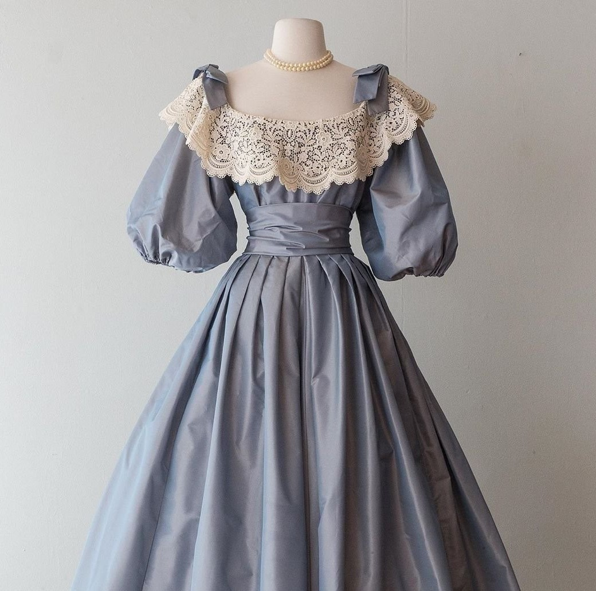

Серо-голубое платье
Описание
Серо-голубое платье в стиле 1920-ых годов в США.

{kind=link}
Характеристики
- Материал: хлопок
- Доп материал: кружево
- Произведено в Китае
- Бусы в комплекте из жемчуга
Подробное описание
Серо-голубое платье в стиле 1920-х годов - это элегантное и стильное воплощение моды того времени. Оно наводит ассоциации с безупречностью и шиком этой эпохи, когда женщины освободились от тесных корсетов и начали выбирать более свободные и практичные наряды. Платье может иметь приталенный силуэт, подчеркивающий изящество и женственные формы. Оно может быть выполнено из легкого шелка или шифона, создавая плавность и грацию движений. Цвет серо-голубого оттенка добавляет элегантности и привлекает внимание. Длина платья обычно достигает колена или немного выше, что отражает моду на более короткие юбки в то время. Открытая грудь и отсутствие рукавов характерны для стиля 1920-х годов, добавляя образу смелости и сексуальности. Рукава могут быть также украшены декоративными элементами, такими как оборки или ажурные вставки.